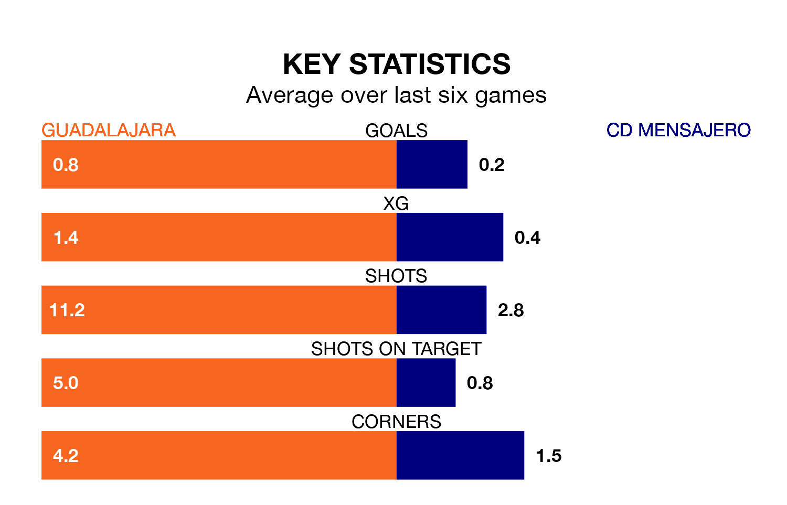

CD Mensajero make the journey to the Estadio Pedro Escartín to play Guadalajara on early Sunday looking to pick up points to end their seven-game losing streak.
Mensajero's struggles have left them with no points from their last six Segunda División RFEF Group 5 matches, while their opponents have earned six from a possible 18.
Mensajero are 17th in the table after 33 games, of which they have won five and drawn 10, earning 25 points.
Guadalajara are five places ahead of the away side in 12th, with 13 wins and four draws putting them on 43 points.
With 26 goals in 33 games so far this season, Mensajero are the league's joint-second-lowest scorers with 0.8 goals per game. And they are conceding more than average, letting in 52 goals at a rate of 1.6 per game.
The hosts, meanwhile, are above average scorers, with 1.2 goals per game, compared to a league average of 1.1. They have conceded 1.5 goals per game.
Guadalajara's last match was on April 28, a 2-0 loss against Getafe B.
Mensajero lost 3-0 against AD Unión Adarve last time out, also on April 28.
Updated: 12:00 (UTC), 02/05/24